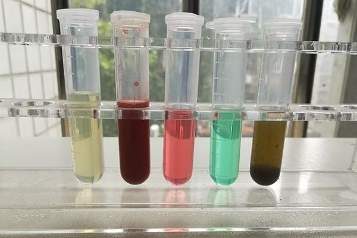

16 Acid-Base Equilibria and Solubility Equilibria

1. Buffer Solutions
A solution containing appreciable amounts of a weak conjugate acid-base pair is called a buffer solution. The solution has the ability to resist changes in \(\ce{pH}\) upon the addition of small amounts of either acid or base. Usually, a buffer solution can be prepared by using a weak acid or a weak base, and it’s salt.
Why a buffer solution can resist changes in \(\ce{pH}\)?
Because both acid and base coexist in a buffer solution under equilibrium. The acid can react with any added \(\ce{OH-}\) and the base can react with any added \(\ce{H+}\).
An example is a solution with comparable amounts of \(\ce{CH3COOH}\) and \(\ce{CH3COONa}\). \(\ce{CH3COONa}\) ionize completely in water to give:
\[\ce{CH3COONa ->[\ce{H2O}] CH3COO- (aq) + Na+ (aq)}\]
If an acid is added, \(\ce{H+}\) will be consumed by \(\ce{CH3COO-}\)
\[\ce{CH3COO- (aq) + H+ (aq) -> CH3COOH (aq)}\]
If a base is added, \(\ce{OH-}\) will be consumed by \(\ce{CH3COOH}\)
\[\ce{CH3COOH(aq) + OH- (aq) -> CH3COO- (aq) + H2O (l)}\]
This buffer system can be written as either \(\ce{CH3COONa/CH3COOH}\) or \(\ce{CH3COO- /CH3COOH}\).
Calculate the \(\ce{pH}\) of a Buffer System
Example: (a) Calculate the pH of a buffer system containing 1.0 M \(\ce{CH3COOH}\) and 1.0 M \(\ce{CH3COONa}\).
Answer:
Strategy: Note the initial concentrations of \(\ce{CH3COOH}\) and \(\ce{CH3COO-}\) are both 1.0 M. Then use ICE table and write the equation of \(K_a\) under equilibrium.
\[\begin{align*} \ce{CH3COOH <=> CH3COO- + H+} \end{align*}\]
ICE table
| \(\ce{CH3COOH}\) | \(\ce{H+}\) | \(\ce{CH3COO-}\) | |
|---|---|---|---|
| Initial (M): | \(1.0\) | \(0\) | \(1.0\) |
| Change (M): | \(-x\) | \(+x\) | \(+x\) |
| Equilibrium (M): | \((1.0-x)\) | \(x\) | \((1.0+x)\) |
\[K_a=\frac{[\ce{H+}][\ce{CH3COO-}]}{[\ce{CH3COOH}]}=\frac{x(1.0+x)}{1.0-x}=1.8\times 10^{-5}\]
Solve the equation and get \(x=[\ce{H+}]=1.8\times 10^{-5}\,\text{M}\)
Thus \(\ce{pH}=-\log (1.8\times 10^{-5})=4.74\)
Example: (b) Calculate the \(\ce{pH}\) of this system in the above question after adding of 0.10 mole of \(\ce{HCl}\) to 1.0 L of this buffer solution.
Answer:
Stragegy: (1) \(\ce{HCl}\) ionize completely to release equal amount of \(\ce{H+}\) and \(\ce{Cl-}\); (2) Assume \(\ce{CH3COO-}\) react with all \(\ce{H+}\), calculate \([\ce{CH3COO-}]\) and \([\ce{CH3COOH}]\); (3) Calculate the equilibrium concentration of \(\ce{H+}\) after partial ionization of \(\ce{CH3COOH}\).
After addition of \(\ce{HCl}\), the concentration of \(\ce{CH3COO-}\) becomes \(1.0-0.1=0.9\) M; the concentration of \([\ce{CH3COOH}]\) becomes \(1.0+0.1=1.1\) M.
\[\begin{align*} \ce{CH3COOH <=> CH3COO- + H+} \end{align*}\]
ICE table
| \(\ce{CH3COOH}\) | \(\ce{H+}\) | \(\ce{CH3COO-}\) | |
|---|---|---|---|
| Initial (M): | \(1.1\) | \(0\) | \(0.9\) |
| Change (M): | \(-x\) | \(+x\) | \(+x\) |
| Equilibrium (M): | \((1.1-x)\) | \(x\) | \((0.9+x)\) |
\[K_a=\frac{[\ce{H+}][\ce{CH3COO-}]}{[\ce{CH3COOH}]}=\frac{x(0.90+x)}{1.1-x}=1.8\times 10^{-5}\]
Solve the equation and get \(x=[\ce{H+}]=2.2\times 10^{-5}\,\text{M}\)
Thus \(\ce{pH}=- \log (2.2\times 10^{-5}) = 4.66\)
Note: If you add same amount of \(\ce{HCl}\) to 1.0 L pure water, the \(\ce{pH}\) would decrease from \(7\) to \(1\)!
Preparing a Buffer Solution with a Specific \(\ce{pH}\)
\[\ce{p}K_a=- \log K_a\]
Because for an acid \[\ce{acid <=> {conjugate\ base} + H+}\] the \(K_a\) value equals \[K_a=\frac{[\text{conjugate base}][\ce{H+}]}{[\text{acid}]}\]
We have
\[[\ce{H+}]=K_a\times\frac{[\text{acid}]}{[\text{conjugate base}]}\] Thus \[\ce{pH}=\ce{p}K_a - \log\frac{[\text{acid}]}{[\text{conjugate base}]}\] or \[\ce{pH}=\ce{p}K_a + \log\frac{[\text{conjugate base}]}{[\text{acid}]}\quad\text{(1)}\]
Use this equation to calculate the ratio between an acid and its conjugate base in order to prepare a buffer solution with a specific \(\ce{pH}\).
To prepare a buffer solution, we choose a weak acid whose \(\ce{p}K_a\) is close to the desired \(\ce{pH}\). Thus the acid and its conjugate base would have comparable concentration in the buffer solution.
Example: (a) Calculate the pH of a buffer system containing 1.0 M \(\ce{CH3COOH}\) and 1.0 M \(\ce{CH3COONa}\). (b) Calculate the \(\ce{pH}\) of this system in the above question after adding of 0.10 mole of \(\ce{HCl}\) to 1.0 L of this buffer solution.
Answer:
This is the same question shown above. However, the calculation becomes much simpler using the new equation.
\[\begin{align*} \ce{pH} & =\ce{p}K_a + \log\frac{[\ce{CH3COO-}]}{[\ce{CH3COOH}]}\\ & = -\log(1.8\times10^{-5}) + \log\frac{1.0}{1.0}\\ & = 4.74 \end{align*}\]
\[\begin{align*} \ce{pH} & =\ce{p}K_a + \log\frac{[\ce{CH3COO-}]}{[\ce{CH3COOH}]}\\ & = -\log(1.8\times10^{-5}) + \log\frac{1.0-0.1}{1.0+0.1}\\ & = 4.66 \end{align*}\]
Example: Calculate the pH of a buffer solution prepared from 0.155 mol of phosphoric acid, \(\ce{H3PO4}\), 0.250 mole of \(\ce{KH2PO4}\), and enough water to make 0.500 L of solution. (Phospohoric acid: \(K_{a1}=7.5\times10^{-3}\))
Answer:
\[\begin{align*} \ce{pH} & =\ce{p}K_a + \log\frac{[\ce{H2PO4-}]}{[\ce{H3PO4}]}\\ & = -\log(7.5\times10^{-3})+\log\frac{0.250/0.500}{0.155/0.500}\\ & = 2.33 \end{align*}\]
Example: What mass of \(\ce{NH4Cl}\) must be added to 0.750 L of a 0.100 M solution of \(\ce{NH3}\) to give a buffer solution with a pH of 9.30? (Hint: Assume a negligible change in volume as the solid is added.)
Answer:
\(K_b\) of \(\ce{NH3}\) is \(1.8\times10^{-5}\). Thus, \(K_a\) of \(\ce{NH4+}\) is \[K_a = \frac{1\times10^{-14}}{1.8\times10^{-5}}=5.6\times10^{-10}\] Thus \[\begin{align*} \ce{pH} & = \ce{p}K_a + \log\frac{[\ce{NH3}]}{[\ce{NH4+}]}\\ \log\frac{[\ce{NH3}]}{[\ce{NH4+}]} & = \ce{pH}-\ce{p}K_a=0.05\\ \frac{[\ce{NH3}]}{[\ce{NH4+}]} & = 10^{0.05} = 1.12\\ [\ce{NH4+}] & =[\ce{NH3}]/1.12 = 0.100/1.12 = 0.0893\text{ M} \end{align*}\]
The moles of \(\ce{NH4Cl}\) to be added is \[0.0893\text{ M}\times 0.750\text{ L} = 0.0670\text{ mol}\]
The mass of \(\ce{NH4Cl}\) to be added is \[0.0670\text{ mol}\times 53.5\text{ g/mol} = 3.58\text{ g}\]
Requirements
1. Understand what is a buffer solution and why a buffer solution can resist the change of \(\ce{pH}\).
2. Know how to calculate the \(\ce{pH}\) of a buffer solution and the \(\ce{pH}\) change after adding a little amount of acid or base.
3. Know how to prepare a buffer solution with a specific \(\ce{pH}\).
2. Titrations
Strong Acid-Strong Base Titrations
The \(\ce{pH}\) value changes sharply around the equivalence point.
At the equivalence point, \(\ce{pH}=7\).
Weak Acid-Strong Base Titrations
At the equivalence point, \(\ce{pH}>7\).
Strong Acid-Weak Base Titrations
At the equivalence point, \(\ce{pH}<7\).
Calculate the \(\ce{pH}\) during a titration process
1. Reaction between a strong acid and a strong base results in a neutral salt which does not affect the \(\ce{pH}\) value. Use the remaining amount of acid or base and the total volumn to calculate the \(\ce{pH}\).
2. Weak acid and strong base react to give a salt which can hydrolyze to release \(\ce{OH-}\). The hydrolysis of the salt should be considered when performing calculation on \(\ce{pH}\). 1. Before reaching equivalence point, \(\ce{pH}\) can be calculated via Equation (1) (see above), knowing the ratio between [conjugate base] and [acid]. 2. At equivalence point, only the hydrolysis of the conjugate base affects the \(\ce{pH}\). 3. After equivalence point, only the excess amount of added strong base affects the \(\ce{pH}\). 3. Strong acid-weak base titrations are similar as weak acid-strong base titrations.
Example: Calculate the \(\ce{pH}\) in the titration of 25.0 mL of 0.100 M HCl by NaOH after the addition to the acid solution of (a) 10.0 mL of 0.100 M NaOH, (b) 25.0 mL of 0.100 M NaOH, (c) 35.0 mL of 0.100 M NaOH.
Answer:
- At this moment, HCl is in excess.
The moles of HCl remaining: \[0.100\text{ M}\times 0.0250\text{ L} - 0.100\text{ M}\times 0.0100\text{ L} = 0.0015\text{ mol}\]
The total volume: \[0.025\text{ L} + 0.0100\text{ L} = 0.0350\text{ L}\]
The concentration of \(\ce{H+}\) equals the concentration of remaining HCl: \[\frac{0.0015\text{ mol}}{0.0350\text{ L}}=0.0428\text{ M}\]
Thus \[\ce{pH} = -\log(0.0428) = 1.37\] (b) At this moment, equal amount of acid and base result in a neutral solution with \(\ce{pH}=7\).
- At this moment, NaOH is in excess.
The moles of NaOH in exess: \[0.100\text{ M}\times 0.0350\text{ L} - 0.100\text{ M}\times 0.0250\text{ L} = 0.0010\text{ mol}\]
The total volume: \[0.025\text{ L} + 0.0350\text{ L} = 0.0600\text{ L}\]
The concentration of \(\ce{OH-}\) equals the concentration of excess NaOH: \[\frac{0.0010\text{ mol}}{0.0600\text{ L}}=0.0167\text{ M}\]
Thus \[\ce{pH} = 14 -[-\log(0.0167)] = 12.2\]
Example: Calculate the \(\ce{pH}\) in the titration of 25.0 mL of 0.100 M acetic acid by sodium hydroxide after the addition to the acid solution of (a) 10.0 mL of 0.100 M NaOH, (b) 25.0 mL of 0.100 M NaOH, (c) 35.0 mL of 0.100 M NaOH.
Answer:
- At this moment, At this moment, \(\ce{CH3COOH}\) is in excess.
The moles of \(\ce{CH3COOH}\) remaining: \[0.100\text{ M}\times 0.0250\text{ L} - 0.100\text{ M}\times 0.0100\text{ L} = 0.0015\text{ mol}\]
The total volume: \[0.025\text{ L} + 0.0100\text{ L} = 0.0350\text{ L}\]
The concentration of \(\ce{CH3COOH}\):
\[\frac{0.0015\text{ mol}}{0.0350\text{ L}}=0.0428\text{ M}\]
The moles of \(\ce{CH3COONa}\) \[0.100\text{ M}\times 0.0100\text{ L} = 0.0010\text{ mol}\]
The concentration of \(\ce{CH3COO-}\) which equals that of \(\ce{CH3COONa}\) \[\frac{0.0010\text{ mol}}{0.0350\text{ L}}=0.0286\text{ M}\]
Thus \[\ce{pH}=\ce{p}K_a+\log\frac{[\ce{CH3COO-}]}{[\ce{CH3COOH}]}=4.57\] (b) At this moment, equal amount of acid and base result in a solution with only \(\ce{CH3COONa}\). The concentration of \(\ce{CH3COONa}\) is \[\frac{0.100\text{ M}\times 0.0250\text{ L}}{0.0250\text{ L}+0.0250\text{ L}}=0.050\text{ M}\]
\[\begin{align*} \ce{CH3COO- + H2O <=> CH3COOH + OH-} \end{align*}\]
ICE table
| \(\ce{CH3COO-}\) | \(\ce{CH3COOH}\) | \(\ce{OH-}\) | |
|---|---|---|---|
| Initial (M): | \(0.050\) | \(0\) | \(0\) |
| Change (M): | \(-x\) | \(+x\) | \(+x\) |
| Equilibrium (M): | \((0.050-x)\) | \(x\) | \(x\) |
\[K_b = \frac{x^2}{0.050-x}=\frac{1\times10^{-14}}{1.8\times10^{-5}}\]
Solve the equation and get \[[\ce{OH-}]=x=1.67\times10^{-5}\] Thus \[\ce{pH}=14-[-\log(1.67\times10^{-5})]=9.22\] (c) At this moment, NaOH is in excess.
The moles of NaOH in exess: \[0.100\text{ M}\times 0.0350\text{ L} - 0.100\text{ M}\times 0.0250\text{ L} = 0.0010\text{ mol}\]
The total volume: \[0.025\text{ L} + 0.0350\text{ L} = 0.0600\text{ L}\]
The concentration of \(\ce{OH-}\) equals the concentration of excess NaOH: \[\frac{0.0010\text{ mol}}{0.0600\text{ L}}=0.0167\text{ M}\]
Thus \[\ce{pH} = 14 -[-\log(0.0167)] = 12.2\]
Acid Base Indicators
Indicators are substances that have distinctly different colors in acidic and basic media.
A given indicator changes from the acid color to the base color in a certain \(\ce{pH}\) range.
The titration curve usually has a steep part around the equivalence point. Only when the indicator would change its color within this steep portion of the curve, the indicator can be used in such titration experiment.
An indicator is typically a weak acid or weak base. The color change happens when \(\ce{pH}\) is close to its \(\ce{p}K_a\). The color change interval (or \(\ce{pH}\) interval) for an acid-base indicator is defined as the range of pH values over which a change in color is observed, and for most indicators this range is approximately \(\ce{p}K_a \pm 1\).
Requirements
1. Calculate the \(\ce{pH}\) in a titration process.
2. Tell which indicator or indicators could be used in given acid-base titration curves.
3. Solubility Equilibria
Solubility Product,\(K_{sp}\) , is the product of the molar concentrations of the constituent ions, each raised to the power of its stoichiometric coefficient in the equilibrium equation.
Values of \(K_{sp}\) of some slightly soluble ionic compounds are summerized in Table 17.2.
In the reaction
\[\ce{AgCl(s) <=> Ag+ (aq) + Cl- (aq)}\]
\[K_{sp}=[\ce{Ag+}][\ce{Cl-}]\]
Knowing the concentrations of \(\ce{Ag+}\) and \(\ce{Cl-}\), the ion product, \(Q\), can be calculated as
\[Q=[\ce{Ag+}][\ce{Cl-}]\]
Compare \(Q\) with \(K_{sp}\).
- \(Q < K_{sp}\) results in unsaturated solution;
- \(Q = K_{sp}\) saturated solution;
- \(Q > K_{sp}\) supersaturated solution. Precipitation will happen.
Molar solubility: the number of moles of solute in 1 L of a saturated solution;
Solubility: the number of grams of solute in 1 L of a saturated solution.
Compared with pure water, the solubility of an ionic compound is less in aqueous solutions containing a common ion (one also produced by dissolution of the ionic compound). This is an example of a phenomenon known as the common ion effect, which is a consequence of the law of mass action that may be explained using Le ChÂtelier’s principle.
The common ion effect and solubility. One example is to calculate the molar solubility of \(\ce{AgCl}\) in a \(\ce{AgNO3}\) solution.
Knowing the solubility, calculate the value of \(K_{sp}\).
Example: \(\ce{Ca(OH)2}\) has a solubility of 0.511 g/L. What is the solubility product of \(\ce{Ca(OH)2}\)?
Answer:
The molar mass of \(\ce{Ca(OH)2}\) is 74.1 g/mol. The molarity of \(\ce{Ca(OH)2}\) at equilibrium is
\[\begin{align*} \frac{0.511\text{ g/L}}{74.1\text{ g/mol}}= 6.90\times10^{-3}\text{ mol/L} \end{align*}\]
\[\begin{align*} \ce{Ca(OH)2(s) <=> Ca^{2+}(aq) + 2OH^{-}(aq)} \end{align*}\]
Careful! Each unit of \(\ce{Ca(OH)2}\) results in 2 units of \(\ce{OH-}\).
\[\begin{align*} K_\text{sp} & = [\ce{Ca^{2+}}][\ce{OH-}]^2\\ & = 6.90\times10^{-3}\times(2\times6.90\times10^{-3})^2\\ & = 1.31\times10^{-6} \end{align*}\]
Knowing the value of \(K_{sp}\), calculate the solubility.
Example: \(\ce{CaCO3}\) has a solubility product \(K_\text{sp}=8.7\times10^{-9}\). Calculate the solubility of \(\ce{CaCO3}\).
Answer:
\[\begin{align*} \ce{CaCO3(s) <=> Ca^{2+}(aq) + CO3^{2-}(aq)} \end{align*}\]
\[\begin{align*} K_\text{sp} = [\ce{Ca^{2+}}][\ce{CO3^{2-}}] \end{align*}\]
\[\begin{align*} [\ce{Ca^{2+}}] = [\ce{CO3^{2-}}] = \sqrt{K_\text{sp}} = 9.3\times10^{-5} \end{align*}\]
At equilibrium, \(\ce{CaCO3}\) has a concentration of \(9.3\times10^{-5}\text{ M}\). The molar mass of \(\ce{CaCO3}\) is 100 g/mol. Thus, the solubility is
\[\begin{align*} 9.3\times10^{-5}\text{ mol/L}\times 100\text{ g/mol} = 9.3\times10^{-3}\text{ g/L} \end{align*}\]
Predict precipitation reactions. Calculate the value of \(Q\) and compare to \(K_{sp}\) to determine whether precipitation would happen.
Example: Does silver chloride precipitate when equal volumes of a \(2.0\times10^{–4}\text{ M}\) solution of \(\ce{AgNO3}\) and a \(2.0\times10^{–4}\text{ M}\) solution of \(\ce{NaCl}\) are mixed? (The solubility product of \(\ce{AgCl}\) is \(1.6\times10^{-10}\))
Answer:
After mixing, the concentrations of \(\ce{Ag+}\) and \(\ce{Cl-}\) both equals \(1.0\times10^{–4}\text{ M}\). (You can assume to mix 1 L \(\ce{NaCl}\) solution with 1 L \(\ce{AgNO3}\) and calculate the concentrations.)
\[\begin{align*} Q & = [\ce{Ag+}][\ce{Cl-}]\\ & = (1.0\times10^{–4})\times(1.0\times10^{–4})\\ & = 1.0\times10^{-8}\\ & > K_\text{sp} \end{align*}\]
Thus, \(\ce{AgCl}\) will precipitate from the mixture.
Calculate the concentration concerning common ion effect.
Example: \(\ce{Mn(OH)2}\) has a solubility product \(K_\text{sp}=2\times10^{-13}\). What \(\ce{pH}\) is required to limit the concentration of \(\ce{Mn^{2+}}\) to \(1.8\times10^{-6}\text{ M}\)?
Answer:
\[\begin{align*} \ce{Mn(OH)2(s) <=> Mn^{2+}(aq) + 2OH^{-}(aq)} \end{align*}\]
\[\begin{align*} K_\text{sp} & =[\ce{Mn^{2+}}][\ce{OH-}]^2\\ [\ce{OH-}] & = \sqrt{\frac{K_\text{sp}}{[\ce{Mn^{2+}}]}}\\ & = \sqrt{\frac{2\times10^{-13}}{1.8\times10^{-6}}} \\ & = 3.3\times10^{-4}\\ \ce{pH} & = 14-[-\log(3.3\times10^{-4})]\\ & = 10.5 \end{align*}\]
Requirements
1. Understand the concepts: solubility product, molar solubility, solubility.
2. Predict whether precipitation would happen by comparing \(Q\) with \(K_{sp}\).
3. Knowing the solubility, calculate the value of \(K_{sp}\); or knowing the value of \(K_{sp}\), calculate the solubility.
4. Calculate the concentration concerning common ion effect.
4. Complex Equilibria
Complex ions are formed when metal cations (Lewis acids which are electron-pair acceptors) combine with Lewis bases (electron-pair donors). An example is:
\[\ce{Ag+ (aq) + 2NH3 (aq) <=> Ag(NH3)2^+ (aq)}\qquad K_f=\frac{[\ce{Ag(NH3)2^+}]}{[\ce{Ag+}][\ce{NH3}]^2}\]
Formation constant, \(K_f\), is the equilibrium constant for complex ion formation. The larger \(K_f\) is, the more stable the complex ion is.
Calculate the concentration of naked metal ions in an complex equilibrium.
Phenomenon of \(\ce{Al(OH)3}\) reacts with acids and bases.
\[\ce{Al(OH)3 (s) + 3H+ (aq) -> Al^3+ (aq) + 3H2O(l)}\]
\[\ce{Al(OH)3 (s) + OH- (aq) <=> Al(OH)4^- (aq)}\]
Requirements
1. Understant what are complex ions and what is the formation constant.
Practice Questions
What are [\(\ce{OH-}\)] and the pH in a solution of 0.125 M \(\ce{CH3NH2}\) and 0.130 M \(\ce{CH3NH3Cl}\)? (\(\ce{CH3NH2}\): \(K_b = 4.4\times10^{-4}\)) What will be the pH if 1.00 g of HCl is added to 1.00 L of this buffer solution? (Assume the addition of HCl does not cause a volume change.)
Answer: \(\ce{[OH-]}=3.98\times 10^{-4}\), pH = 10.6, pH = 10.4 after adding of HCl.How much solid \(\ce{CH3COONa}\) must be added to 0.300 L of a 0.50 M acetic acid solution to give a buffer with a pH of 5.00? (\(K_a = 1.8\times10^{-5}\) for acetic acid. Hint: Assume a negligible change in volume as the solid is added.)
Answer: 15.9 g25.00 mL of \(\ce{HNO3}\) solution with a concentration of 0.1021 M was titrated with a \(\ce{KOH}\) solution with a concentration of 0.1103 M. Calculate (1) the pH when 15.00 mL \(\ce{KOH}\) solution is added; (2) the amount of \(\ce{KOH}\) needed to reach the equivalence point; (3) the pH when 30.00 mL \(\ce{KOH}\) solution is added.
Answer: (1) 1.65; (2) 23.1 mL; (3) 12.125.00 mL of \(\ce{HNO2}\) solution with a concentration of 0.1021 M was titrated with a \(\ce{KOH}\) solution with a concentration of 0.1103 M. Calculate (1) the pH when 15.00 mL \(\ce{KOH}\) solution is added; (2) the amount of \(\ce{KOH}\) needed to reach the equivalence point; (3) the pH at the equivalence point; (4) the pH when 30.00 mL \(\ce{KOH}\) solution is added. (\(\ce{HNO2}\): \(K_a=4.0\times10^{-4}\))
Answer: (1) 3.66; (2) 23.1 mL; (3) 8.06; (4) 12.1The molar solubility of AgI is \(1.2\times10^{-8}\) M. Calculate the solubility product of AgI.
Answer: \(1.4\times 10^{-16}\)The \(K_{sp}\) of copper(I) bromide, CuBr, is \(6.3\times10^{–9}\). Calculate the molar solubility of copper bromide.
Answer: \(7.9\times 10^{-5}\) MTo a 13.6 mL 0.0246 M NaCl solution, you add 0.00482 g \(\ce{AgNO3}\) (assume this does not cause the volume change). Will AgCl precipatate out from this solution? (\(K_{sp} = 1.6\times10^{-10}\))
Answer: Yes, since \([\ce{Ag+}]=0.00209\) M, \([\ce{Ag+}][\ce{Cl-}]>K_{sp}\).Calculate the concentration of \(\ce{Ag+}\) required to begin precipitation of \(\ce{Ag2CO3}\) in a solution that is \(2.50\times10^{-6}\) M in \(\ce{CO3^{2-}}\). (\(K_{sp} = 8.1\times10^{-12}\))
Answer: 0.0018 MWhich of the following pairs can be classfied as buffer systems? (1) \(\ce{KF/HF}\); (2) \(\ce{KBr/HBr}\); (3) \(\ce{Na2CO3/NaHCO3}\); (4) \(\ce{NaH2PO4/Na3PO4}\).
Answer: (1) and (3)Assuming equal concentrations of conjugate base and acid, which one of the following mixtures is suitable for making a buffer solution with an optimum pH of 7.4 to 7.5?
A. \(\ce{CH3COONa/CH3COOH}\) (\(K_a = 1.8\times10^{-5}\))
B. \(\ce{NH3/NH4Cl}\) (\(K_a = 5.6\times 10^{-10}\))
C. \(\ce{NaOCl/HOCl}\) (\(K_a = 3.2\times 10^{-8}\))
D. \(\ce{NaNO2/HNO2}\) (\(K_a = 4.5\times 10^{-4}\))
E. \(\ce{NaCl/HCl}\)
Answer: CThe indicator dinitrophenol is an acid with a \(K_a\) of \(1.1\times10^{−4}\). Would you use it for a titration between (a) strong acid and strong base; (b) strong acid and weak base; (c) weak acid and strong base? Why?
Answer: (b)
Copyright
Copyright(C) 2022 Yu Wang

This work is licensed under a Creative Commons Attribution 4.0 International License.